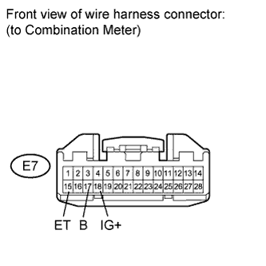

AIRBAG SYSTEM > SRS Warning Light does not Come ON |
| 1.CHECK BATTERY |
Measure the voltage of the battery.
|
| ||||
| OK | |
| 2.CHECK CONNECTOR |
Turn the engine switch off.
Disconnect the cable from the negative (-) battery terminal, and wait for at least 90 seconds.
Check that the connectors are properly connected to the combination meter.
|
| ||||
| OK | |
| 3.CHECK HARNESS AND CONNECTOR (SOURCE VOLTAGE OF COMBINATION METER) |
 |
Turn the engine switch off.
Disconnect the cable from the negative (-) battery terminal, and wait for at least 90 seconds.
Disconnect the E7 connector from the combination meter.
Connect the cable to the negative (-) battery terminal, and wait for at least 2 seconds.
Measure the voltage according to the value(s) in the table below.
| Tester Connection | Switch Condition | Specified Condition |
| E7-18 (IG+) - E7-17 (B) | Engine switch on (IG) | 11 to 14 V |
| E7-17 (B) - E7-15 (ET) | Always | 11 to 14 V |
|
| ||||
| OK | |
| 4.CHECK SRS WARNING LIGHT (SHORT TO GROUND) |
Turn the engine switch off.
Disconnect the cable from the negative (-) battery terminal, and wait for at least 90 seconds.
Connect the connector to the combination meter.
Connect the cable to the negative (-) battery terminal, and wait for at least 2 seconds.
Turn the engine switch on (IG).
Check the SRS warning light condition.
|
| ||||
| OK | ||
| ||